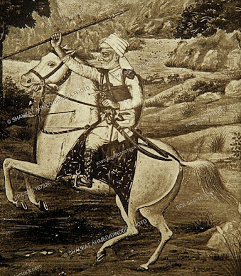

DURGADAS RATHORE: VEER OF MARWAR
Introduction
Durgadas Rathore was born on 13 August 1638 is credited with having preserved the rule of the Rathore
dynasty over Marwar, India,
following the death of Jaswant Singh in the 17th century. In doing so he had to defy [Aurangzeb], a Mughal
Emperor. He died on 22 November 1718.
Durgadas was the son of Askaran Rathore, a Rajput minister of Jaswant Singh, the ruler of Marwar. He was a
distant relative of the royal family, being a descendant of Karana, a son of Rao Ranmal who ruled in the
15th century.
JASWANT SINGH'S DEATH AND TOOK OVER AJMER:-:-
Jaswant Singh died in 1678 in Afghanistan leaving no heir. Aurangzeb took the opportunity to intervene by
imposing Muslim rule over Marwar. This formed a part of the Mughal strategy to destroy Hinduism and his
flooding of the area with troops was successful in denying any opposition.
Soon after Jaswant Singh's death two of his queens each gave birth to male children. One of these sons died
soon after his birth, leaving the other – Ajit Singh – as sole heir. Aurangzeb chose not to recognize him as
a legitimate heir. He imposed a tax on non-Muslims and soon after sold the kingdom to another chieftain,
Indra Singh. Aurangzeb had moved his base from Delhi to Ajmer to oversee the subjugation
but in April 1679 returned to his capital, leaving administrative and military support in Marwar for the
unpopular new ruler.
DURGADAS' STRUGGLE TO HIDE AJIT SINGH:-
Prominent senates of Marwar, including Durgadas, went to Delhi to plead the recognition of Ajit Singh as
heir. Aurangzeb refused their request, although he did offer to bestow a title and a grant when the child
attained the age of majority. Aurangzeb required that the child be raised in the imperial harem and that the
ranis live there also. According to one contemporary source, Aurangzeb also offered to give Ajit Singh the
throne of Jodhpur in the future if it was agreed that the child was raised in the Muslim faith.
The attitude of Aurangzeb was not acceptable to the Rathore delegation, who resolved upon rescuing Ajit
Singh and the queens from Delhi. They were aware that many of them were likely to die in the process and
this proved to be the case: as they retreated from the city on 25 June 1679 they were pursued by Mughal
guards and fought several desperate and deadly rearguard actions to protect Durgadas, who had the queens and
child with him. The pursuit continued till the evening when the Mughals finally tired. The infant Ajit Singh
was taken to safety in Balunda,
where the wife of one of the delegation kept the child for almost a year. Later the child was moved to
safety with queens.

REVOLT AGAINST MUGHALS:-
Aurangzeb reacted to these events by deposing the incompetent puppet ruler of Marwar, Indra Singh, and
placing it under the direct Mughal rule. Durgadas was
aware of Aurangzeb's strategies thus he substituted the son of a milkman for Ajit Singh and the child was
raised as if he was the rightful heir to Jaswant Singh.
During the period that followed, when the Mughals controlled Marwar, Durgadas was among those who carried
out a relentless struggle against the occupying forces. Due to which Marwar remained in a state of war for
nearly three decades.
The cause of the Mughal withdrawal from Mewar had been a rebellion by a son of Aurangzeb, Akbar, who had
proved to be incompetent when placed in charge of various forces in Mewar. He eventually rebelled against
his father and allied himself with the Rajputs.